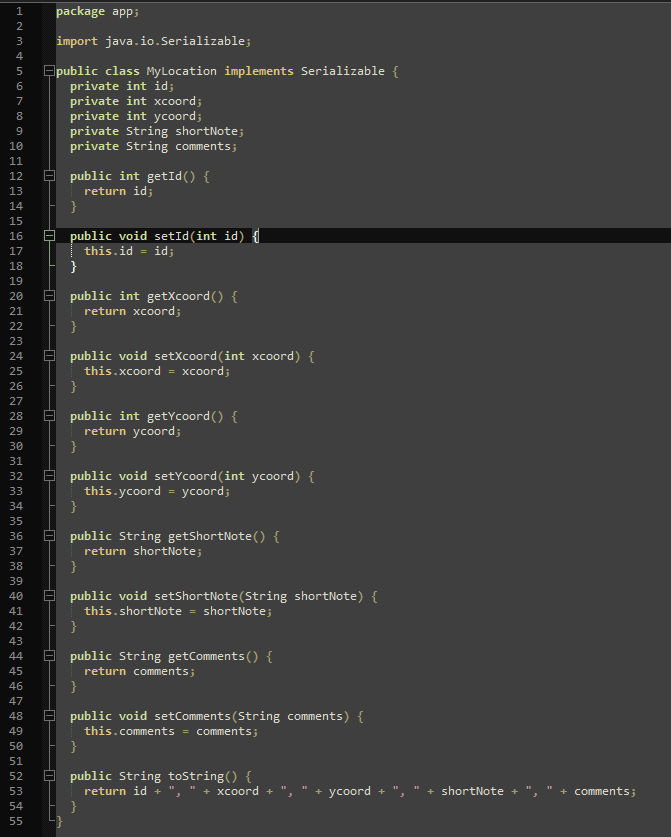

A screenshot of my pom.xml file
A screenshot of my terminal
A screenshot of my "MyLocation.java" file

Note that this file only has private fields, with corresponding getter and setter methods. It also implements "serializable".
To implement the closest location functionality I knew that I first needed to get my data from the user back to the controller. I'd already done this for a previous question, and I felt like it was already exactly what I wanted so I just copied and pasted it. It moved data through the use of a form using a "post" method, putting the data into a "MyLocation" bean. This had the benefit of using different functions to handle the "get" and "post" requests, so I could ensure that a user visiting the page without giving a location would receive a good default page. I used a bit of conditional thymeleaf to check if the return attribute was null (as it would be for the page returned by the "get" handler). The controller handled the situation where the hashmap was empty by giving a soft error message to the user. I was able to do this because I formatted the response message within the controller, instead of sending raw data to thymeleaf to format.